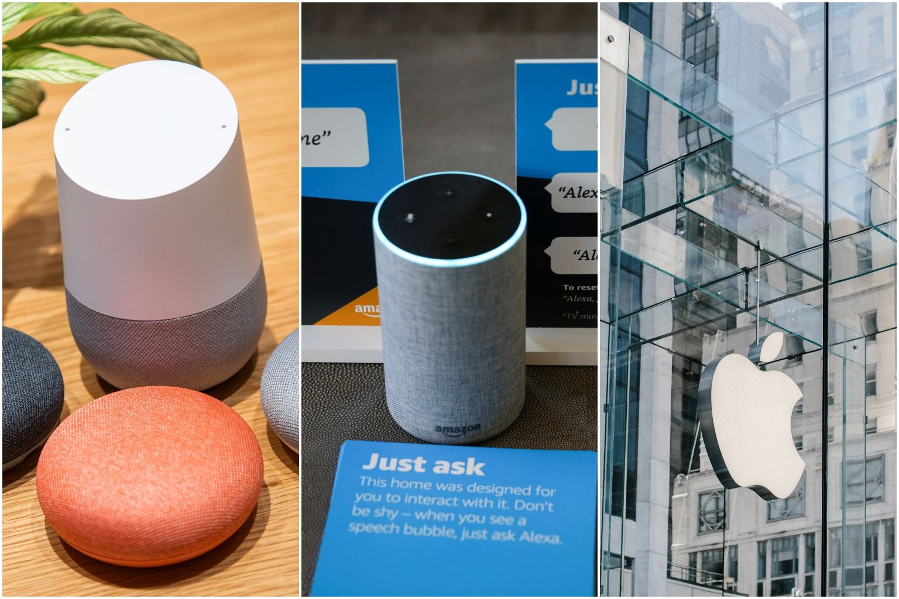

La interacción persona-ordenador , en inglés Human Computer Interaction (HCI), es un subsector de la informática. Dentro de esta disciplina científica se desarrollarán interfaces y sistemas interactivos entre humanos y máquinas. La característica especial de la HCI es su enfoque interdisciplinario, que también hace uso de métodos y teorías de otros campos científicos como la psicología, la sociología y las ciencias del trabajo. Las subáreas de la HCI incluyen el e-learning y el diseño de experiencias de usuario.
Áreas de uso
El HCI se utiliza en muchas áreas. Especialmente en el comercio y la industria, las personas están conectadas con máquinas para lograr resultados óptimos. La investigación militar también se aprovecha de las ventajas de la interacción hombre-máquina. En medicina, los dispositivos inteligentes ayudan a los pacientes a regenerarse o ayudan a las personas discapacitadas en sus tareas cotidianas. El objetivo es siempre armonizar las competencias humanas con las ventajas del control de las máquinas y aprovechar las ventajas de ambos "sistemas"
Ejemplos conocidos
Google utiliza muchos proyectos para mostrar cómo se puede ver en la práctica la interacción entre el ordenador y el ser humano. Al igual que el proyecto Siri de Apple, el control por voz para la búsqueda es una de las tecnologías del futuro. Las gafas Google Glass funcionan casi exclusivamente con comandos de voz. La función complementaria de Google Suggest de búsqueda de Google también se puede identificar como parte de la HCI. Un paso más hacia la vinculación entre el hombre y la máquina es el desarrollo de las funciones de búsqueda como parte de la actualización de Hummingbird.

Imagen tomada de: https://www.businesstimes.com.sg/technology/with-a-laser-researchers-say-they-can-hack-alexa-google-home-or-siri
Interaccion Humano Ordenador / 2021 / Recuperado de: https://es.ryte.com/wiki/Interacci%C3%B3n_Persona_-_Ordenador